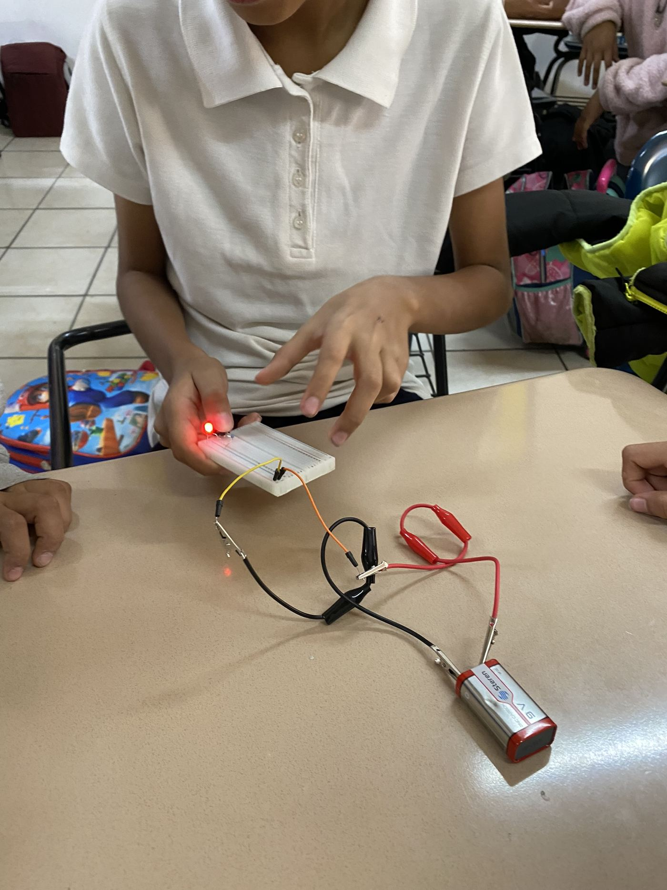

Impartir clases de robótica dentro de la currícula es hoy el estándar de oro. Si tu colegio lo hace, felicidades, estás cumpliendo con lo mínimo esperado por los padres modernos. Pero si realmente quieres posicionar tu colegio como un referente tecnológico en tu ciudad para 2027, necesitas dar el siguiente paso: un equipo representativo de robótica.
No estamos hablando del club de ciencias de los viernes. Hablamos de una escuadra oficial con nombre, uniforme y presupuesto, que sale a competir contra otras escuelas. Aquí te explicamos por qué esta inversión retorna multiplicada.
1. Es la mejor herramienta de retención de alumnos
Cuando un alumno forma parte de un equipo competitivo, su sentido de pertenencia a la escuela se dispara. Ya no solo asiste a clases; defiende los colores de su institución. Para los padres de familia, sacar a su hijo de un colegio donde es "el líder de programación del equipo titular" es impensable, incluso si la colegiatura sube.
2. Diferenciación de Marketing real
Todos los colegios privados de la zona dicen tener "educación vanguardista" en sus espectaculares. Pero muy pocos pueden poner una foto de sus alumnos levantando un trofeo estatal de tecnología. Los éxitos del equipo de robótica generan contenido para redes sociales que es orgánico, emotivo y, lo más importante, comprobable.
3. Atrae al talento, no solo al promedio
Los alumnos con altas capacidades matemáticas o lógicas suelen aburrirse en el sistema tradicional. Un equipo de robótica de alto rendimiento les da un espacio donde pueden destacar y ser retados a su verdadero nivel. Esto atrae a familias que buscan excelencia académica para sus hijos.
4. Fomenta el liderazgo y la mentoría cruzada
En un equipo representativo bien estructurado, los alumnos de secundaria son los capitanes de los alumnos de primaria. Este sistema de mentorías crea una comunidad estudiantil más unida, reduce el bullying y forma líderes naturales antes de que entren a la preparatoria.
El mito del "es demasiado caro"
Muchos directivos frenan la creación de un equipo porque piensan que necesitan comprar componentes industriales. Para 2027, las competencias más formativas (como la WRO o FIRST Lego League en sus divisiones iniciales) están diseñadas para kits accesibles. El costo real está en el tiempo del coach, no en el metal.
Por dónde empezar: Selecciona a tus 6 alumnos más apasionados por la tecnología (no necesariamente los de mejores calificaciones) y asígnales un mentor interno. Empiecen con un torneo regional pequeño para entender la dinámica antes de ir por las grandes ligas.
Si quieres que tu colegio cuente con un equipo de robótica para el ciclo 2027 y no sabes por dónde empezar, hablemos. En Cultivatec ofrecemos consultoría y capacitación para los maestros que serán los futuros coaches campeones de tu institución.